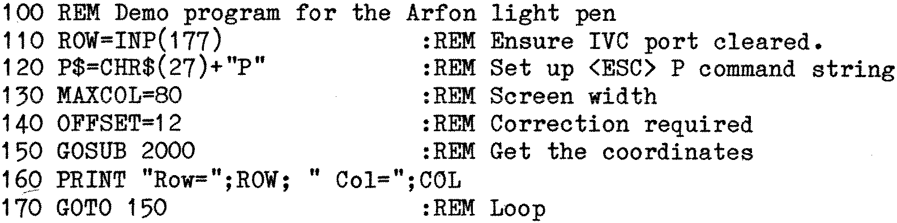

80-Bus News |
July–October 1982 · Volume 1 · Issue 3 |
| Page 17 of 51 |
|---|
Commands can easily be sent to the IVC via the usual PRINT or WRITE state- ments, but the difficulty arises in getting any information back. For someone using the IVC on a Nascom 1 or 2 with the Nascom Basic and one of the Nascom monitors the solution is relatively easy. The ESC P command can be sent by a PRINT statement, and the WAIT and INP commands can be used to read the coord- inates back. (See example 1).
With the Gemini Multiboard system or the GM809 disk system (with CP/M 2.2) the situation is more complicated. This is because the IVC card is occasionally being interrogated by the system software to check if there is any character waiting from the keyboard. (This check occurs whether or not a keyboard is actually connected to the IVC). Because of this it may not be possible to use the method of example 1 to get the light pen coordinates, and a machine code subroutine has to be used. Such a subroutine is listed in example 2. This is slightly more long-winded than necessary, but it has been written to be position independent so that it may be copied directly, and no recoding is necessary wherever you decide to place it. This program is included in the Basic routines that follow within the DATA statements.
This Basic program is for a Nascom 1 or 2 using the Nascom Basic and one of the Nascom monitors. It is assumed that the user has already entered a simple routine along the lines of PUTVID from the IVC manual in order to use the IVC in this environment. (The U command should have been used to activate the IVC driver which should also append LFs to CRs).
NOTE: The IVC ports 0B1H and 0B2H are 177 and 178 (decimal). The buffer full/empty bit is bit 7 which is equivalent to decimal 128 for use in the WAIT statement.
Nascom Basic users should also look at the following examples which illustrate another way that the coordinates can be obtained.
| Page 17 of 51 |
|---|